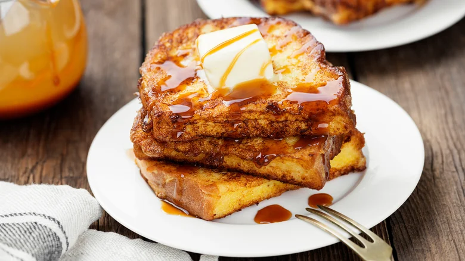

Fluffy French Toast
Home

Description
This is the best French toast recipe. It's different because it uses flour. I have given it to some friends and they've all liked it better than the French toast they usually make!
Ingredients
- ¼ cup all-purpose flour
- 1 cup milk
- 3 large eggs
- 1 tablespoon white sugar
- 1 teaspoon vanilla extract
- ½ teaspoon ground cinnamon
- 1 pinch salt
- 12 (¾- to 1-inch thick) slices of bread
Steps
- Gather all your ingredients.
- Place flour into a large mixing bowl; slowly whisk in milk until smooth. Whisk in eggs, sugar, vanilla, cinnamon, and salt until well combined.
- Heat a lightly oiled griddle or frying pan over medium heat. Meanwhile, soak bread slices in milk mixture until saturated.
- Working in batches, cook bread on the preheated griddle or pan until golden brown on both sides, about 2 minutes per side.
- Serve hot and enjoy.